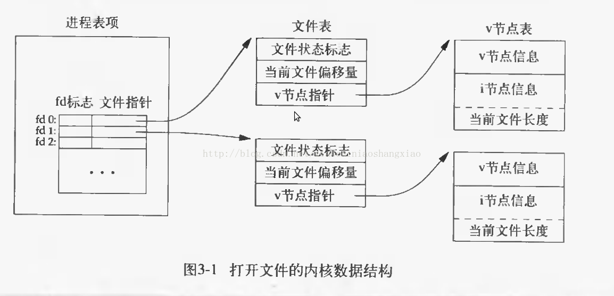
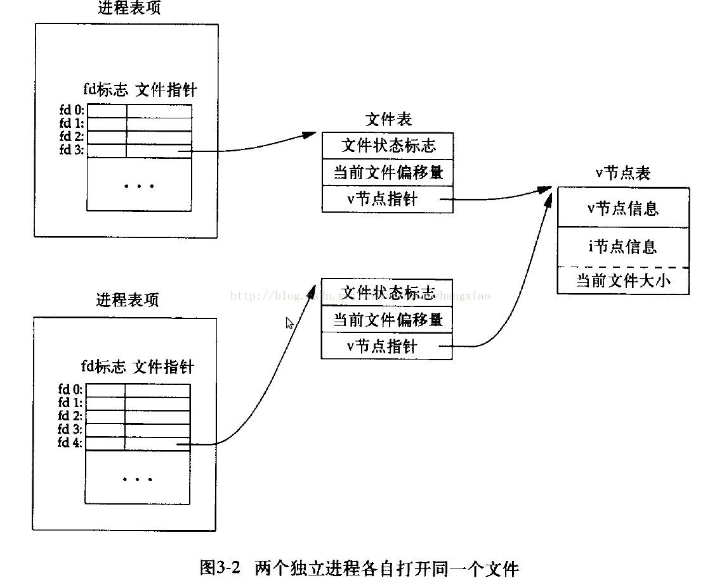

文件I/O
Table of Contents
大多数UNIX文件I/O只需用到5个函数： open 、 read 、 write 、 lseek 以及 close 。这些函数经常被称之为 不带缓存的I/O ，指的是每个read和write都调用内核中的一个系统调用。然后说明不同缓存器长度对read和write函数的影响
接着将通过传送给open函数的参数来讨论原子操作这个概念，以及在多个进程间如何共享文件，并涉及内核的有关数据结构
最后将说明 dup 、 fcntl 和 ioctl 函数
文件描述符
对于内核而言， 所有打开文件都由文件描述符引用 。文件描述符是一个 非负整数 。当 打开 一个现存文件或 创建 一个新文件时，内核向进程 返回 一个文件描述符。当读、写一个文件时，用 open 或 creat 返回的文件描述符标识该文件，将其作为 参数 传送给 read 或 write
文件描述符的范围是 0 ~ OPEN_MAX
shell
- 文件描述符0：进程的 标准输入 相结合
- 文件描述符1： 标准输出 相结合
- 文件描述符2： 标准出错输出 相结合
常量定义
在 <unistd.h> 中定义以下常量来标识标准文件描述符
- STDIN_FILENO : 0
- STDOUT_FILENO : 1
- STDERR_FILENO : 2
设备文件
标准输入、标准输出和标准出错对应的设备文件注册在目录 /dev 中，文件名分别为 stdin , stdout , stderr 。它们实际上分别是指向 /proc/self/fd/0 , /proc/self/fd/1 , /proc/self/fd/2 的软链接
$ cd /dev/ /dev $ ls -l std* lrwxrwxrwx 1 root root 15 Jan 20 2017 stderr -> /proc/self/fd/2 lrwxrwxrwx 1 root root 15 Jan 20 2017 stdin -> /proc/self/fd/0 lrwxrwxrwx 1 root root 15 Jan 20 2017 stdout -> /proc/self/fd/1
虚拟目录 /proc/self/fd 中记录了当前进程所打开的文件描述符。在xfce4-terminal中可以看到，实际文件描述符指向 dev/pts 虚拟字符设备
/proc/self/fd $ ls -l total 0 lrwx------ 1 klose klose 64 Jan 19 21:54 0 -> /dev/pts/0 lrwx------ 1 klose klose 64 Jan 19 21:54 1 -> /dev/pts/0 lrwx------ 1 klose klose 64 Jan 19 21:54 2 -> /dev/pts/0 lrwx------ 1 klose klose 64 Jan 19 22:20 255 -> /dev/pts/0
对于 守护进程 ， 0、1、2都是链接到 /dev/null 的，这说明 守护进程不会跟任何的接口进行交互
open函数
以 oflag 指定的方式打开字符串 filename 指定的文件
#include <fcntl.h> /** * 打开文件 * * filename: 文件名 * oflag: 打开选项，例如O_RDWR | O_APPEND * mode_t: 可选择参数，当oflag包含O_CREAT的时候，表示创建文件的权限 * * 成功：返回对应的文件描述符，失败：返回-1，并设置errorno指代失败原因 * */ int open(const char *filename, int oflag, .../* mode_t mode */);
oflag参数
oflag参数必须指定且只指定下面中的一个
- O_RDONLY ：只读打开
- O_WRONLY ：只写打开
- O_RDWR ：读、写打开
可选参数：
- O_APPEND：每次写时都加到 文件的尾端
- O_CREAT：若此文件 不存在则创建 它
- 使用此选择项时，需同时说明第三个参数mode用其说明该新文件的权限
- O_EXCL：如果同时指定了O_CREAT，而文件已经存在则出错。用来 测试一个文件是否存在 ，如果不存在则创建此文件成为一个原子操作
- O_TRUNC：如果此文件存在，而且为只读或只写成功打开，否则将其 长度截短为0
- O_NOCTTY：如果pathname指的是终端设备，则不将此设备分配作为此进程的控制终端
- O_NONBLOCK：如果pathname指的是一个 FIFO 、一个 块特殊 文件或一个 字符特殊 文件，则此选择项为此文件的本次打开操作和后续的I/O操作设置 非阻塞 方式
- O_SYNC：使每次write都等到 物理I/O操作 完成
这些常数定义在 <fcntl.h> 头文件中
文件名截短
- 若_POSIX_NO_TRUNC被设置：在整个路径名超过PATH_MAX，或路径名中的任一文件名超过NAME_MAX时，返回出错ENAMETOOLONG
- 若_POSIX_NO_TRUNC没设置：文件名会被截断到最大字符数
返回的文件描述符
由open返回的文件描述符一定是 最小的未用描述符数字
这一点被很多应用程序用来在标准输入、标准输出或标准出错输出上打开一个新的文件 例如，一个应用程序可以先关闭标准输出(通常是文件描述符1)，然后打开另一个文件，该文件一定会在文件描述符1上打开
creat函数
创建一个新的文件
#include <sys/types.h> #include <sys/stat.h> #include <fcntl.h> /** * 以只写形式打开一个新的文件 * * filename：文件名 * mode：文件权限 * * 成功：返回打开的文件描述符，失败：返回 -1 */ int creat(const char *filename, mode_t mode);
以 只写方式 创建并打开一个新文件，如果文件已存在，则文件被 截短为0 。事实上creat函数等价于下面的open调用
open("filename", O_WRONLY | O_TRUNC | O_CREAT,mode);
creat的一个不足之处是以只写方式打开所创建的文件 如果要创建一个临时文件，并要先写该文件，然后又读该文件 则必须先调用creat，close，然后再调用open
最新的open可以这样做
open("filename", O_RDWR | O_TRUNC | O_CREAT,mode);
close函数
关闭一个打开文件，如果成功返回 0，如果失败返回 -1
#include <unistd.h> /** * 关闭文件 * * filedes：文件描述符 * * 成功：返回 0，失败：返回 -1 * */ int close(int filedes);
关闭文件的时候如果进程在此文件上加有记录锁，则将 释放所有记录锁
关闭进程会关闭所有打开的文件描述符，所以close函数往往不会被显示调用
lseek函数
设置文件指针的位置
#include <unistd.h> /** * 设置文件指针的位置 * * filedes：文件描述符 * offset：文件位置偏移量，单位是字节数 * whence：从哪里开始计算偏移量 * * 成功：返回相对于文件开始处的偏移量（字节），失败：返回-1，并设置errno * */ off_t lseek(int filedes, off_t offset, int whence);
off_t
off_t通常定义为一个字的长度：32位机器是long类型，4个字节(byte)长度
参数
对参数offset的解释与参数whence的值有关:
- 若whence是 SEEK_SET ：将该文件的位移量设置为 距文件开始处offset个字节 ，offset为非负
- 若whence是 SEEK_CUR ：将该文件的位移量设置为其 当前值加offset ，offset可为正或负
- 若whence是 SEEK_END ：则将该文件的位移量设置为 文件长度加offset ，offset可为正或负
返回值
- 成功：返回 相对于 文件开始处 的偏移量 (可能是负数)
- 失败：返回 -1，并设置errno
因为lseek可以返回负数，所以判断lseek是否执行成功，最好用返回值是否为 -1 来进行判断
测试是否支持文件偏移
在文件是FIFO、管道或者套接字时，lseek将失败并设置errno为 ESPIPE (Illegal seek)
#include <sys/types.h> #include <unistd.h> #include <stdio.h> #include <stdlib.h> int main(void) { if(lseek(STDIN_FILENO, 0, SEEK_CUR) == -1) printf("can not seek \n"); else printf("seek OK \n"); exit(EXIT_SUCCESS); }
文件空洞
文件位移量可以大于文件的当前长度，在这种情况下，对该文件的下一次写将延长该文件，并在文件中构成一个空洞，这一点是允许的。位于文件中但没有写过的字节都被读为0
#include <sys/types.h> #include <sys/stat.h> #include <fcntl.h> #include "apue.h" char buf1[] = "abcdefghij"; char buf2[] = "ABCDEFGHIJ"; int main(void) { int fd; if((fd = creat("file.hole", FILE_MODE)) < 0) err_sys("creat error"); if(write(fd, buf1, 10) != 10) err_sys("buf1 write error"); /* offset now 10*/ if(lseek(fd, 40, SEEK_SET) == -1) err_sys("seek error"); /* offset now 40 */ if(write(fd, buf2, 10) != 10) err_sys("buf2 write error"); /* offset now 50 */ exit(0); }
read函数
从打开文件中读取数据到缓存区中，如果成功读取，在返回 读取的真实字节数
#include <unistd.h> /** * 从filedes文件的当前位置读取nbytes字节到缓存区buf中 * * filedes: 文件描述符 * buf: 缓存区指针 * nbytes: 读取的字节数目 * * 返回值：正数表示读取的真实字节数 * 0 表示读取到EOF * -1 表示出错，并设置errno * */ ssize_t read(int filedes, void *buf, size_t nbytes);
有多种情况可使实际读到的字节数少于要求读字节数：
- 读普通文件时，在读到要求字节数之前已到达了 文件尾端
- 例如若在到达文件尾端之前还有30个字节，而要求读100个字节，则read返回30。下一次再调用read，它将返回0（文件尾端）
- 当从 终端设备 读时，通常一次最多 读一行
- 当从 网络 读时，网络中的 缓冲 机制可能造成返回值小于所要求读的字节数
- 某些 面向记录 的设备，例如磁带，一次最多返回一个记录
write函数
向打开的文件写数据，对于普通文件写操作从 文件的当前位移量 处开始。如果在打开该文件时指定了 O_APPEND 选择项，则在每次写操作之前，将文件位移量设置在 文件的当前结尾 处。在一次成功写之后，该 文件位移量增加实际写的字节数
#include <unistd.h> /** * 按指定的字节数nbytes从buf处取数据，输出到文件filedes的当前位置处，如果已经到文件末尾，将增加文件长度并在最后添加EOF标志 * * filedes：文件描述符 * buf：字符缓存区指针 * nbytes：写入数据字节数 * * 返回值: 正数时表示真实写入的字节数, * 出错返回 -1，同时errno被设置 * */ ssize_t write(int filedes, const void *buf, size_t nbytes);
write出错的常见原因是:
- 磁盘已写满
- 超过了对一个给定进程的文件长度限制
I/O的效率
将标准输入复制到标准输出
#include <fcntl.h> #include "apue.h" #define BUFFSIZE 8192 int main(void) { int n; char buf[BUFFSIZE]; while( (n = read(STDIN_FILENO, buf, BUFFZIZE)) > 0) if(write(STDOUT_FILENO, buf, n) != n) err_sys("write error"); if(n < 0) err_sys("read error"); exit(0); }
表3-1显示了用18种不同的缓存长度,读1468802字节文件所得到的结果，其标准输出则被重新定向到/dev/null上。此测试所用的文件系统是伯克利快速文件系统，其块长为8192字节
| BUFFSIZE | 用户CPU(秒) | 系统CPU(秒) | 时钟时间(秒) | 循环次数 |
| 1 | 23.8 | 397.9 | 423.4 | 1468802 |
| 2 | 12.3 | 202.0 | 215.2 | 734401 |
| 4 | 6.1 | 100.6 | 107.2 | 367201 |
| 8 | 3.0 | 50.7 | 54.0 | 183601 |
| 16 | 1.5 | 25.3 | 27.0 | 91801 |
| 32 | 0.7 | 12.8 | 13.7 | 45901 |
| 64 | 0.3 | 6.6 | 7.0 | 22951 |
| 128 | 0.2 | 3.3 | 3.6 | 11476 |
| 256 | 0.1 | 1.8 | 1.9 | 5738 |
| 512 | 0.0 | 1.0 | 1.1 | 2869 |
| 1024 | 0.0 | 0.6 | 0.6 | 1435 |
| 2048 | 0.0 | 0.4 | 0.4 | 718 |
| 4096 | 0.0 | 0.4 | 0.4 | 359 |
| 8192 | 0.0 | 0.3 | 0.3 | 180 |
| 16384 | 0.0 | 0.3 | 0.3 | 90 |
| 32768 | 0.0 | 0.3 | 0.3 | 45 |
| 65536 | 0.0 | 0.3 | 0.3 | 23 |
| 131072 | 0.0 | 0.3 | 0.3 | 12 |
系统CPU时间的最小值开始出现在BUFFSIZE为8192处（文件系统的逻辑块大小），继续增加缓存长度对此时间并无影响
文件共享
unix支持 多个进程共享文件 。在介绍dup函数之前，需要先说明这种共享，为此先说明内核用于所有I/O的数据结构
内核数据结构
图3-1显示了进程有两个不同的打开文件：
- 一个文件打开为 标准输入 ：文件描述符 0
另一个打开为 标准输出 ：文件描述符为 1

进程表
每个进程在 进程表 中都有一个 进程记录项 ，每个记录项中有一张 打开的文件描述符表 ，可将其视为一个矢量，每个描述符占用一项。与每个文件描述符相关联的是：
- 文件描述符标志
- 指向一个 文件表项的指针
文件表
内核为所有打开文件维持一张文件表。每个文件表项包含：
- 文件状态标志 ：读、写、增写、同步、非阻塞等
- 当前文件位移量
- 指向该文件 v节点表项的指针
v节点表
每个打开文件(或设备)都有一个v节点结构。v节点包含了 文件类型 和对此文件进行 各种操作的函数的指针 信息。对于大多数文件，v节点还包含了该 文件的i节点 (索引节点)。
i节点中的信息是在打开文件时从盘上读入内存的，都是快速可供使用的 例如i节点包含了文件的所有者、文件长度、文件所在的设备、指向文件在盘上所使用的实际数据块的指针等等
文件共享
两个独立进程各自打开了同一文件，则如下图中所示的安排：

假定第一个进程使该文件在文件描述符 3 上打开，而另一个进程则使此文件在文件描述符 4 上打开 打开此文件的每个进程都得到一个文件表项，因为每个进程都有自己对这个文件的位移量 但是对一个给定的文件往往只有一个v节点表项
- 在完成每个write后，在 文件表项中的当前文件位移量 即增加所写的字节数
- 如果这使当前文件位移量超过了当前文件长度，则在 i节点表项中 的 当前文件长度 被设置为 当前文件位移量
- 如果用O_APPEND标志打开了一个文件，则相应标志也被设置到 文件表项的文件状态标志 中。每次对这种具有添写标志的文件执行写操作时，在 文件表项 中的 当前文件位移量 首先被设置为 i节点表项中的文件长度 。这就使得每次写的数据都添加到文件的当前尾端处
- lseek函数只修改 文件表项中的当前文件位移量 ，没有进行任何I/O操作
- 若一个文件用lseek被定位到文件当前的尾端，则 文件表项中的当前文件位移量 被设置为 i节点表项中的当前文件长度
- 允许 多个文件描述符项 指向 同一文件表项
下面介绍dup函数时就能看到这一点 在fork后也发生同样的情况，此时父、子进程对于每一个打开的文件描述符共享同一个文件表项
- 文件描述符标志和文件状态标志在作用范围方面的区别：
- 文件描述符：只用于 一个进程 的一个描述符
- 文件状态标志：适用于指向该 给定文件表项 的 任何进程 中的 所有描述符
原子操作
原子操作指的是由多步组成的操作 如果该操作原子地执行，则或者执行完所有步，或者一步也不执行 不可能只执行所有步的一个子集
dup函数
复制一个现存的文件描述符
#include <unistd.h> /** * 复制当前进程的某个文件描述符 * * filesdes: 被复制的文件描述符 * * 成功：返回当前可用文件描述符中的最小值，失败：返回 -1 * */ int dup(int filedes); /** * 用filedes2参数指定新描述符的数值 * * filedes: 被复制的文件描述符 * filedse2: 复制的文件描述符 * * 成功：返回 filedes2，如果filedes2已经打开，则先关闭。如果filedes=filedes2，直接返回，不需关闭 * 失败：返回 -1 * */ int dup2(int filedes, int filedes2);
这些函数返回的 新文件描述符与参数filedes 共享 同一个 文件表项 。下图显示了这种情况：

两个描述符指向同一文件表项，所以它们共享 同一文件状态标志(读、写、添写等) 以及 同一当前文件位移量
/dev/fd
比较新的系统都提供名为/dev/fd的目录，其目录项是名为0、1、2等的文件。 打开文件/dev/fd/n等效于复制描述符n
fd = open("/dev/fd/0", mode);
大多数系统忽略所指定的mode，而另外一些则要求mode是所涉及的文件(在这里则是标准输入)原先打开时所使用的mode的子集
上面的打开等效于:
fd = dup(0);
/dev/fd文件主要由shell使用，这允许程序以对待其他路径名一样的方式 使用路径名参数来处理标准输入和标准输出 ：
$ cat file1 /dev/fd/0 file3 | lpr
先读file1，再读标准输入，再读file3，最后打印全部
fnctl函数
改变已经打开文件的属性和权限标志
#include <sys/types.h> #include <unistd.h> #include <fcntl.h> /** * 改变已经打开文件的性质 * * filedes：文件描述符 * cmd：功能 * args：可选参数 * * 成功：返回值依赖于cmd，失败：返回 -1 * */ int fcntl(int filedes, int cmd, .../* int arg*/);
功能
根据cmd的不同值，fnctl可以进行不同的操作
复制一个现存的描述符
F_DUPFD ：复制文件描述符filedes
- 新文件描述符作为函数值返回。它是尚未打开的各描述符中大于或等于第三个参数值(取为整型值)中各值的最小值
- 新描述符与filedes共享同一文件表项。但是新描述符有它自己的 文件描述符标志 ，其 FD_CLOEXEC文件描述符标志被清除
dup 函数等价于：
fcntl (filedes, F_DUPFD, 0);
dup2 函数等价于：
close(filedes 2); fcntl(filedes, F_DUPFD, filedes2);
dup2是一个原子操作，而close及fcntl则包括两个函数调用 因为在close和fcntl之间插入执行信号捕获函数，它可能修改文件描述符
获得/设置文件描述符标记
- F_GETFD ：获取文件描述符的标志 FD_CLOEXEC （用于指出执行exec(3)调用时是否关闭此文件）
- F_SETFD ：对于filedes设置文件描述符标志。新标志值按 第三个参数 (取为整型值)设置
获得/设置文件状态标志
- F_GETFL ：获取 文件描述符的状态标志
- F_SETFL ：设置文件描述符的状态标志，将文件状态标志设置为 第三个参数的值 (取为整型值)
| 文件状态标志 | 说明 |
| O_RDONLY | 只读打开 |
| O_WRONLY | 只写打开 |
| O_RDWR | 读/写打开 |
| O_APPEND | 写时都添加至文件尾 |
| O_NONBLOCK | 非阻塞方式 |
| O_SYNC | 等待写完成 |
| O_ASYNC | 异步I/O |
获得/设置异步I/O有权
- F_GETOWN：获得 当前接收SIGIO和SIGURG信号的进程ID或进程组ID
- F_SETOWN：设置接收SIGIO和SIGURG信号的进程ID或进程组ID
- 正的arg：指定一个 进程ID
- 负的arg：等于arg绝对值的一个 进程组ID
获得/设置记录锁
- F_GETLK
- F_SETLK
- F_SETLKW
返回值
fcntl的返回值与命令有关。如果出错所有命令都返回-1。如果成功则返回某个其他值。下列三个命令有特定返回值:
- F_DUPFD：返回 新的文件描述符
- F_GETFD/F_GETFL：返回 相应标志
- F_GETOWN：返回一个 正的进程ID或负的进程组ID
实例
对于指定的描述符打印文件标志
#include <sys/types.h> #include <fcntl.h> #include "apue.h" int main(int argc, char *argv[]) { int val; if(argc != 2) err_quit("usage: fileStatusFlag <descriptor#>"); if( (val = fcntl(atoi(argv[1]), F_GETFL, 0)) < 0) err_sys("fcntl error for %d", atoi(argv[1])); int accmode = val & O_ACCMODE; switch(accmode) { case O_RDONLY: printf("read only"); break; case O_WRONLY: printf("write only"); break; case O_RDWR: printf("read write"); break; default: err_dump("unknown access mode"); } if(val & O_APPEND) printf(", append"); if(val & O_NONBLOCK) printf(", nonblocking"); #if !defined(_POSIX_SOURCE) && defined(O_SYNC) if(val & O_SYNC) printf(", synchronous writes"); #endif //putchar("\n"); printf("\n"); exit(0); }
对一个文件描述符打开一个或多个文件状态标志
在修改文件描述符标志或文件状态标志时必须谨慎：
- 取得现在的标志值
- 按照希望修改它
设置新标志值
#include <fcntl.h> #include "apue.h" void set_fl(int fd, int flags) { int val; if( (val = fcntl(fd, F_GETFL, 0)) < 0) err_sys("fcntl F_GETFL error"); val |= flags; if(fcntl(fd, F_SETFL, val) < 0) err_sys("fcntl F_SETFL error"); }
不能只是执行F_SETFD或F_SETFL命令，这样会关闭以前设置的标志位
ioctl函数
ioctl函数是I/O操作的杂物箱，不能用本章中其他函数表示的I/O操作通常都能用ioctl表示
终端I/O是ioctl的最大使用者
#include <unistd.h> /* SVR4 */ #include <sys/ioctl.h> /*4.3+BSD*/ /** * 执行各种硬件设备相关的IO操作 * * fieldes: 文件描述符 * request: 请求类型，总是头文件中的# define常量 * 第三个可选参数一般只有一个指向变量或结构的指针，用来表示设备 * * 出错：返回 -1，成功：返回其他值 * */ int ioctl(int filedes, int request,...);
在此原型中，表示的只是ioctl函数本身所要求的头文件 通常还要求另外的设备专用头文件，例如终端ioctl都需要头文件<termios.h>
请求类型
| 类型 | 常数名 | 头文件 | ioctl数 |
|---|---|---|---|
| 盘标号 | DIOxxx | <disklabel.h> | 10 |
| 文件I/O | FIOxxx | <ioctl.h> | 7 |
| 磁带I/O | MTIOxxx | <mtio.h> | 4 |
| 套接口I/O | SIOxxx | <ioctl.h> | 25 |
| 终端I/O | TIOxxx | <ioctl.h> | 35 |
- 磁带操作可以在磁带上写一个文件结束标志，反绕磁带，越过指定个数的文件或记录等等
- 存取和设置终端，伪终端，使用流系统，以及网络socket操作都将使用ioctl